Working paper, 2026Bài thảo luận, 2026
Why Subsidised Aquaculture Insurance Does Not Reach FarmersVì sao bảo hiểm thủy sản có trợ cấp không đến được người nuôi
Climate hazards, trigger design and risk-based pricing in Vietnam's Mekong DeltaHiểm họa khí hậu, thiết kế ngưỡng kích hoạt và định phí theo rủi ro ở ĐBSCL
Paper (EN, PDF)Bài báo (EN, PDF)Paper (VI, PDF)Bài báo (VI, PDF)Policy Brief (MPP-556, Group 3, VI)Policy Brief (MPP-556, Nhóm 3)GitHub
The questionCâu hỏi nghiên cứu
Vietnam subsidises agricultural insurance premiums by group (up to 90% for poor and near-poor households, 20% for others), yet premiums barely vary with local hazard. Why does cover still not reach shrimp and pangasius farmers, and would hazard-based triggers and risk-based pricing do better?
Nhà nước hỗ trợ phí bảo hiểm nông nghiệp theo nhóm đối tượng (tối đa 90% cho hộ nghèo, cận nghèo; 20% cho hộ khác) nhưng phí gần như không đổi theo mức hiểm họa địa phương. Vì sao bảo hiểm vẫn chưa đến được người nuôi tôm, cá tra, và ngưỡng kích hoạt theo hiểm họa cùng định phí theo rủi ro có tốt hơn không?
Main findingsKết quả chính
- Payouts are almost absent: 0-1% of fish-farming households in pilot provinces report an insurance payout.
- Synthetic difference-in-differences finds no detectable programme effect (0.016, SE 0.066).
- Candidate index triggers discriminate weakly to moderately (AUC 0.47-0.63), so basis risk is material.
- Marine heatwave days rise from about 7 to about 53 per year in the series studied.
- Gần như không có chi trả: 0-1% hộ nuôi cá ở các tỉnh thí điểm báo nhận bồi thường bảo hiểm.
- SDID không phát hiện tác động chương trình (0,016; SE 0,066).
- Các ngưỡng chỉ số phân biệt yếu đến vừa (AUC 0,47-0,63), nên rủi ro cơ sở đáng kể.
- Số ngày sóng nhiệt biển tăng từ khoảng 7 lên khoảng 53 ngày/năm trong chuỗi nghiên cứu.
Research figuresHình ảnh nghiên cứu
Figures are from the English and Vietnamese papers; click to enlarge. Sources and notes are in the papers.Các hình lấy từ bài báo tiếng Anh và tiếng Việt; bấm để phóng to. Nguồn và ghi chú xem trong bài.


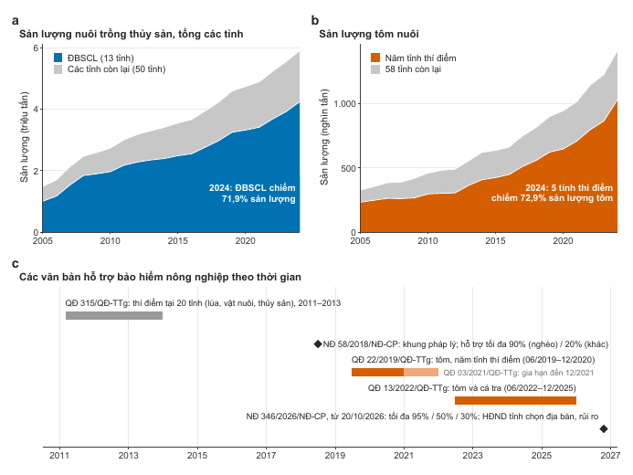


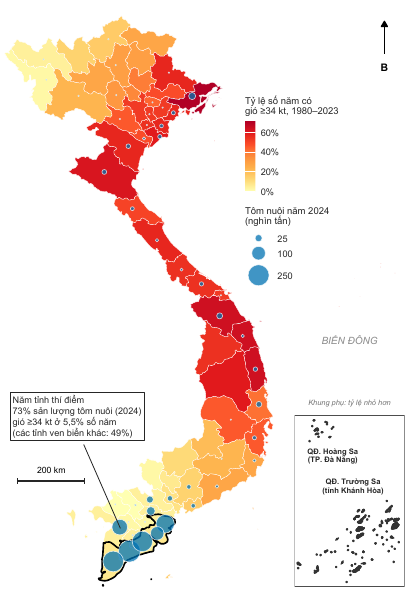

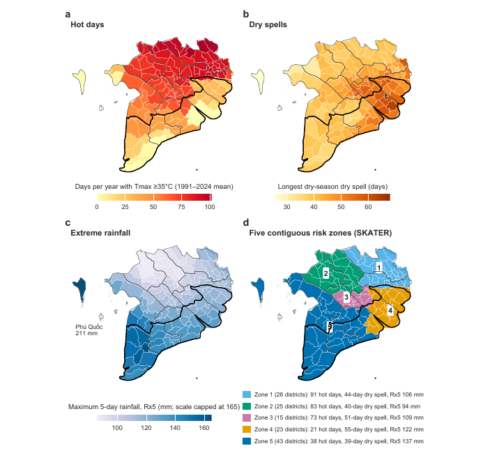

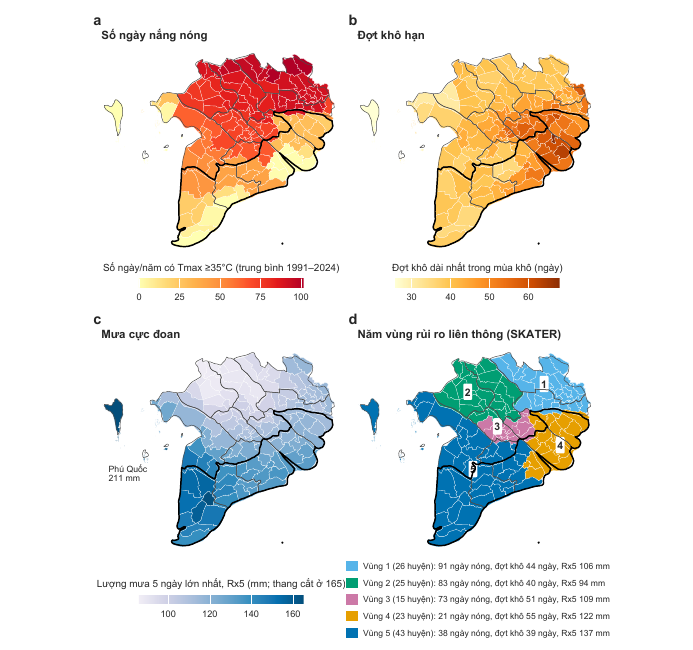

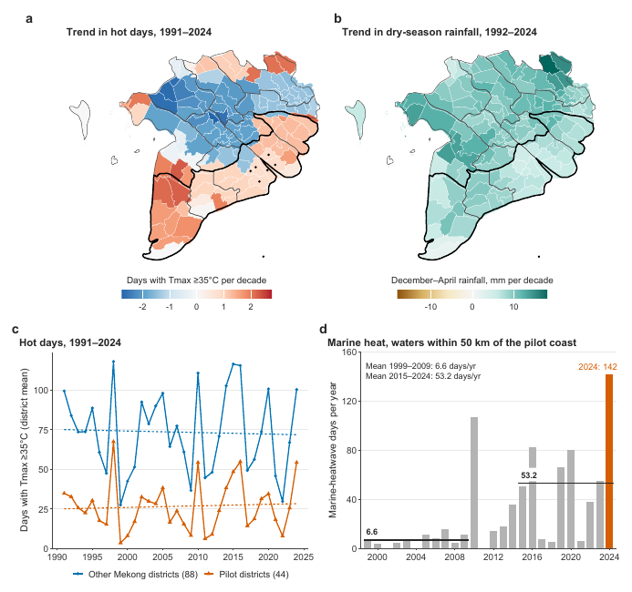

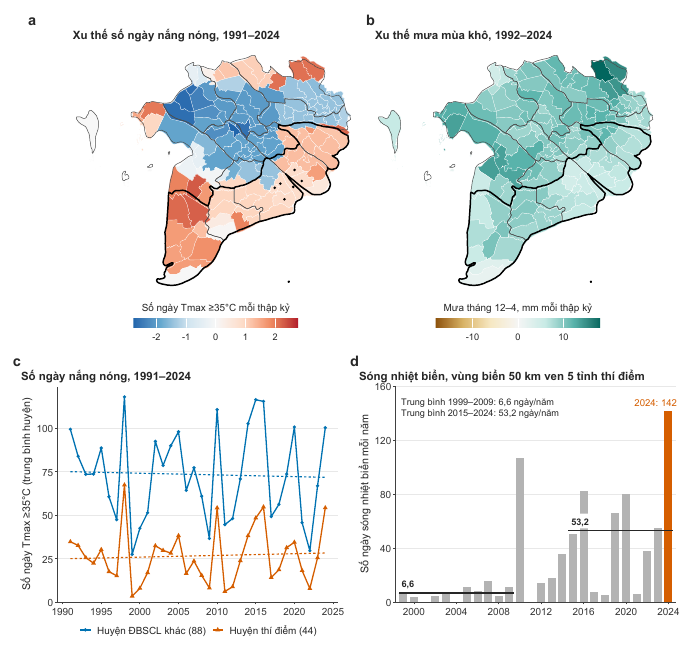

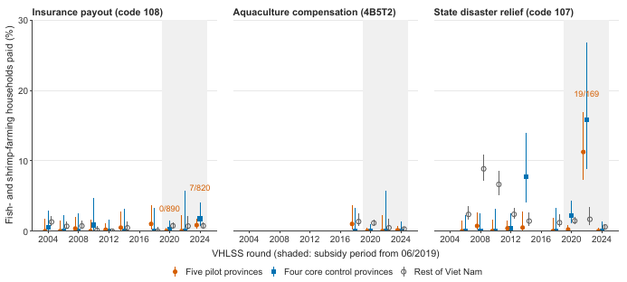

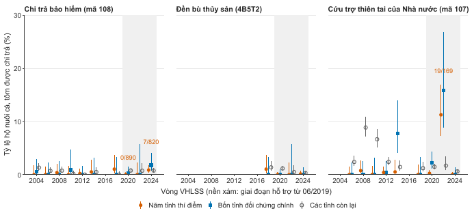

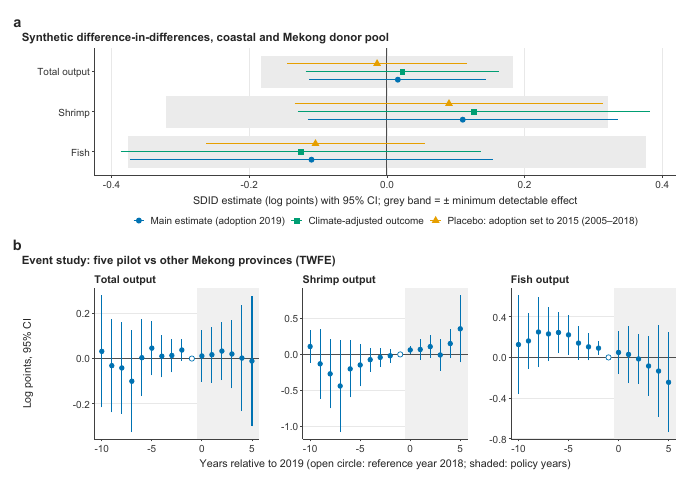

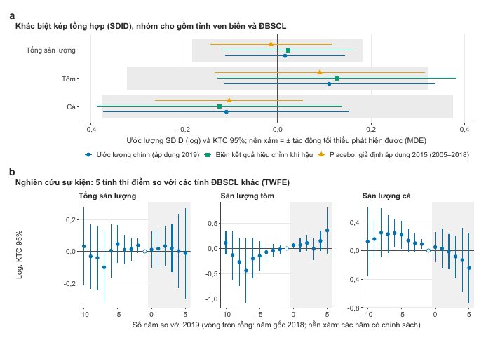

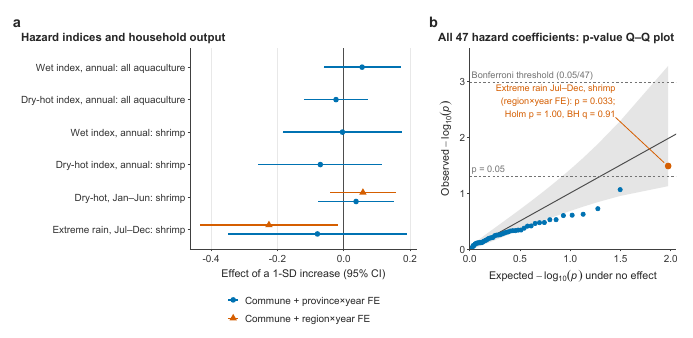

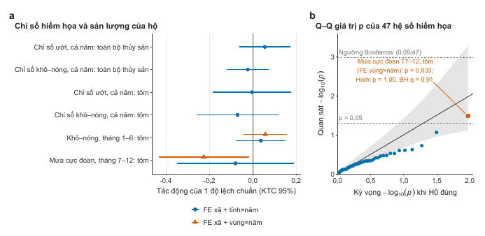

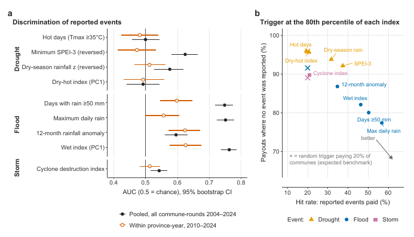

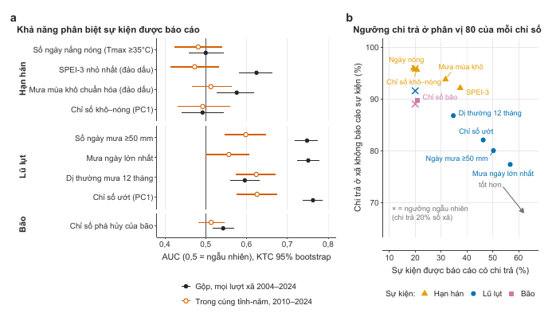

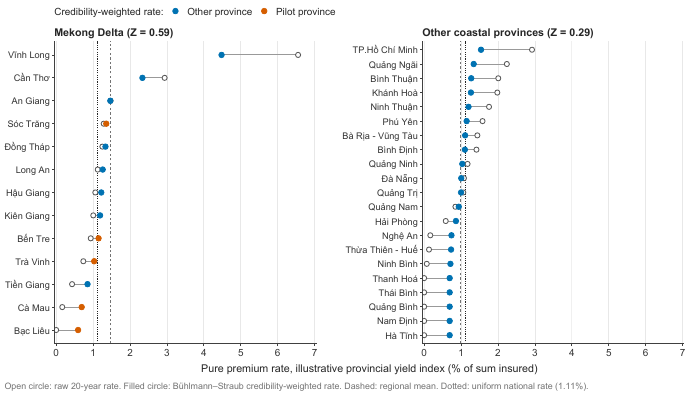

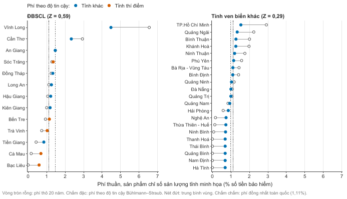

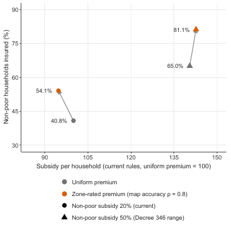

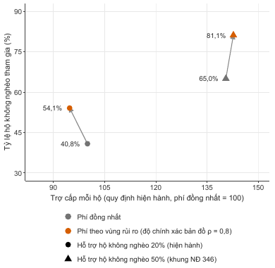
Scope and dataPhạm vi và dữ liệu
Five provinces: Ben Tre, Tra Vinh, Soc Trang, Bac Lieu and Ca Mau. Cover is for natural-disaster perils only, not disease. Data: VHLSS 2002-2024 (restricted, not published here) with ERA5, IBTrACS and CHIRPS/SPEI hazard layers.
Năm tỉnh: Bến Tre, Trà Vinh, Sóc Trăng, Bạc Liêu và Cà Mau. Chỉ bảo hiểm rủi ro thiên tai, không gồm dịch bệnh. Dữ liệu: VHLSS 2002-2024 (hạn chế, không đăng ở đây) cùng các lớp hiểm họa ERA5, IBTrACS, CHIRPS/SPEI.
StatusTình trạng
Not peer reviewed; results may change. The Policy Brief is a group assignment for MPP-556 (Fulbright University Vietnam), published with the members' consent. Text and figures CC BY 4.0, code MIT.
Chưa qua phản biện; kết quả có thể thay đổi. Policy Brief là bài nhóm môn MPP-556 (Đại học Fulbright Việt Nam), đăng với sự đồng ý của các thành viên. Văn bản và hình CC BY 4.0, mã MIT.